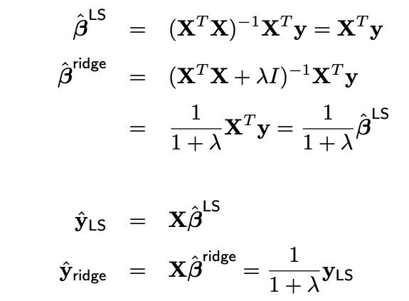
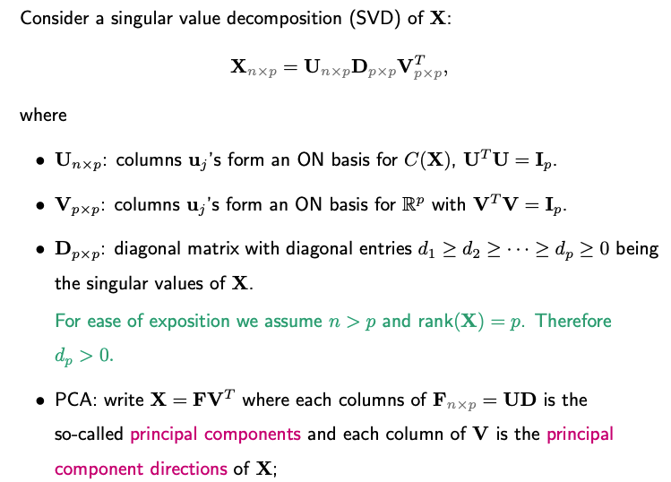
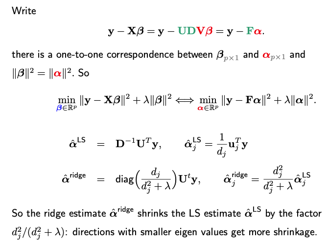
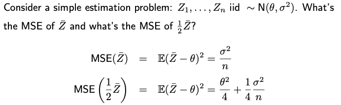
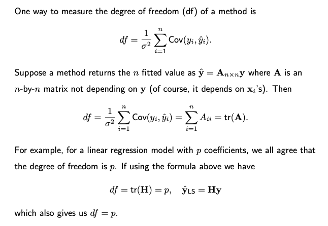
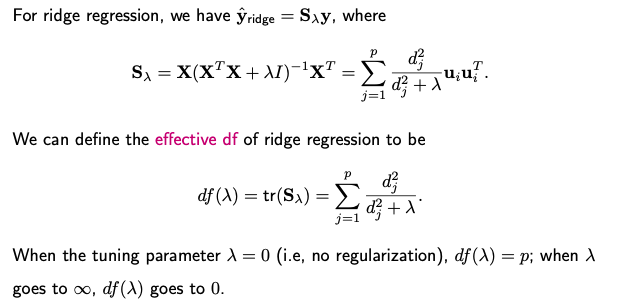

3.3. Ridge Regression
3.3.1. Introduction to Ridge
In ridge regression, the objective function to be minimized is a smooth quadratic function of beta. This function consists of two terms: the residual sum of squares and the L2 norm of beta.
To find the minimizer of this objective function, multiple approaches can be employed. For instance, taking the derivative with respect to beta and setting it to zero leads to a solvable form for the minimizer Alternatively, one can can express the objective function as the residual sum of squares for an augmented linear regression model.
In this augmented model, we have n+p observations. The response vector is formed by stacking p zero responses onto the original y vector. The design matrix for the newly added p responses is simply an identity matrix. Defining this augmented response vector as \(\tilde{y}\) and the new design matrix as \(\tilde{\mathbf{X}}\), one finds that their residual sum of squares is identical to the ridge regression objective function.
We can then find the ridge regression solution using this new design matrix and new respose vector.
A key benefit of ridge regression is its applicability to design matrices that are not of full rank. This is made possible by adding \(\lambda \mathbf{I}\) to \(\mathbf{X}^t \mathbf{X}\), which allows us to invert the resulting matrix. This feature sets ridge regression apart from ordinary least squares (OLS) methods, making it a versatile tool for tackling a wide range of problems.
3.3.2. The Shrinkage Effect
When discussing ridge regression, it’s crucial to consider its nature as a ‘shrinkage’ method. This becomes evident when we look at the special case where the design matrix X is orthogonal.
Suppose X is an n-by-p matrix where the columns are orthonormal (i.e., unit length and mutually orthogonal). Then \(\mathbf{X}^t \mathbf{X} = \mathbf{I}\).
{kind=link}
It becomes clear that the ridge estimate is a shrunk version of the OLS estimate since \(\frac{1}{1 + \lambda} < 1\) for any lambda > 0.
In situations where the columns of X are not orthogonal, we can reformulate the regression problem using an orthogonal version of X, achieved through techniques such as Principal Component Analysis (PCA) or Singular Value Decomposition (SVD). In this transformed space, it becomes evident that the ridge estimates and predictions serve as shrunken versions of their least squares (LS) counterparts.
{kind=link}
Next, we can rewrite the problem in terms of a transformed design matrix F and new coefficient vector alpha, which is a rotation transformation of the original beta.
{kind=link}
Summary
In ridge regression, the coefficients and predictions are shrinkage versions of those in OLS. The degree of shrinkage varies with the magnitude of singular values, shrinking less for larger singular values and more for smaller ones. This accounts for the regularization effect that makes ridge regression robust, especially when X has multicollinearity or is not full-rank.
3.3.3. Why Shrinkage
A natural question that arises is why one might want to shrink the least squares estimate. One might argue that the least squares estimate is unbiased, so applying shrinkage, which would introduce bias, seems counterintuitive. After all, isn’t unbiasedness a desirable property?
To explore this, let’s consider a simple one-dimensional estimation problem and examine the mean squared error (MSE) of two estimators. MSE, defined as the expected squared difference between the estimator and the true value, is equal to Bias-square + Variance.
{kind=link}
When comparing the MSE of these two estimators, it’s not straightforward to determine which estimator performs better. The effectiveness of the shrinkage depends on the magnitude of theta-square.
In summary, while shrinkage introduces bias, it also reduces variance. This trade-off may result in an overall lower MSE, making shrinkage a worthwhile consideration in certain situations.
3.3.4. Degree-of-Freedom of Ridge Regression
When discussing linear regression with variable selection, a key consideration is the model’s dimensionality, which refers to the number of parameters or predictors utilized.
A pertinent question in this context is: What is the effective degree of freedom for a ridge regression model? Despite using a p-dimensional coefficient vector, the model’s effective dimensionality may be less due to the shrinkage effect introduced by the regularization term.
In ridge regression, the regularization strength is controlled by lambda. This parameter directly impacts the shrinkage factor, usually represented as a/(a + lambda), where a and lambda are both positive.
As lambda approaches infinity, the shrinkage factor nears zero, essentially reducing the dimension of the model to zero.
On the other hand, as lambda goes to zero, the ridge regression model becomes a standard p-dimensional least squares regression model.
A commonly-adopted metric for the degree of freedom involves the sum of the normalized variance between the observed \(y_i\) and its corresponding predicted value \(\hat{y}_i\), across all n samples. In matrix notation, if a method returns \(\hat{\mathbf{y}} = \mathbf{A} \mathbf{y}\), the degree of freedom can be computed as the trace of matrix A.
{kind=link}
Similarly, we can compute the effective degree of freedom in ridge regression as follows.
{kind=link}
Distinct from other variable selection methods, ridge regression allows for a fractional degree of freedom. This value can range continuously between zero and p, contingent upon the regularization parameter lambda.